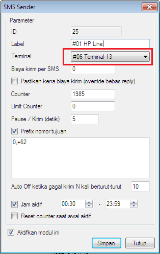
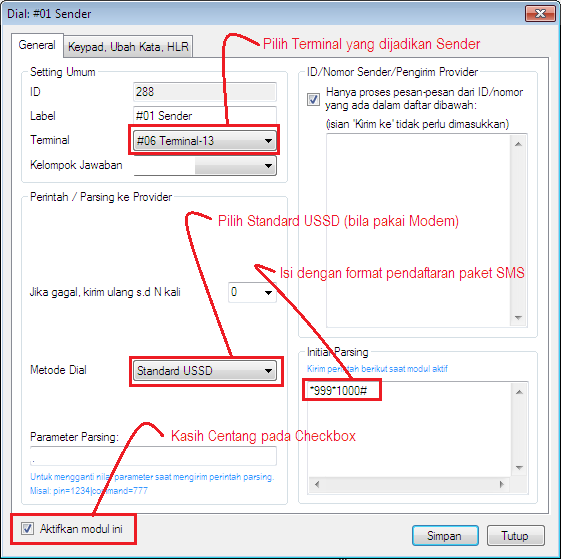
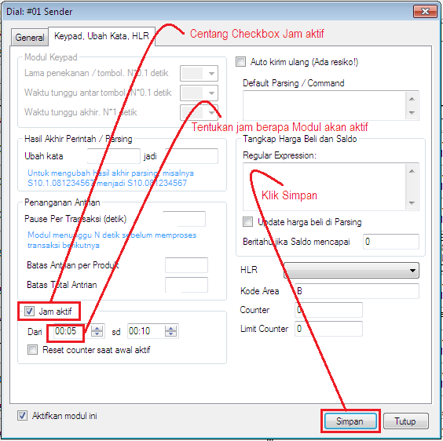
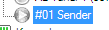
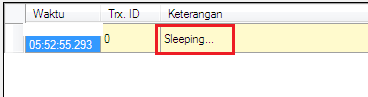
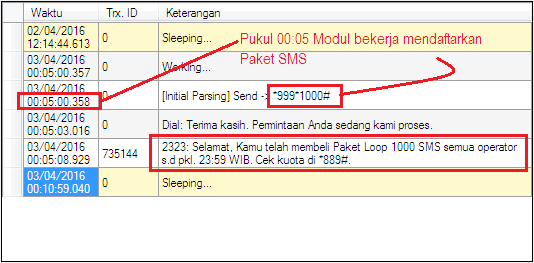

Daftar Paket SMS Otomatis
Guna menekan biaya operasional server pulsa dalam hal Sender SMS para pemilik biasanya memanfaatkan Paket SMS Operator yang menawarkan tarif relatif murah, dimana terkadang membutuhkan daftar paket setiap hari. Hal ini tentu tidak praktis bila tidak ditunjang dengan teknologi yang mengotomatisasinya. Nah... kabar baiknya, di OtomaX versi 3.6.3 ini telah hadir fitur yang menjembadaninya, yakni Jam aktif dan limit counter pada modul. Dengan fitur ini kita dapat mendaftarkan Paket SMS secara otomatis pada waktu yang kita tentukan. Hebat bukan...!!!. Fitur ini tersedia di OtomaX Edisi Standard atau lebih tinggi cek disini. Bila edisi OtomaX Anda belum mendukung, upgrade dahulu klik disini; dan bila belum memiliki OtomaX, beli dahulu klik disini.
Bagaimana implementasi daftar Paket SMS otomatis?... simak berikut ini:
-
Pilih Modul SMS Sender -> Klik Kanan -> Klik Setting. Perhatikan Sender kita menggunakan
Terminal berapa? Misalnya: #06 Terminal-13

-
Pilih Kelompok Modul Dial -> Klik Kanan -> Klik Tambah Dial. Buat Modul Dial baru dan
setting sesuai gambar di bawah ini:


Icon Modul berwarna abu – abu:

Pada Menu lihat log akan tampil seperti di bawah, ini pertanda Modul sedang tidur dan siap bekerja mendaftarkan Paket SMS pada jam yang telah kita tentukan.

-
Dan berikut hasilnya, Modul akan melakukan pendaftaran Paket SMS pada jam yang telah ditentukan secara
otomatis.

- Selesai.